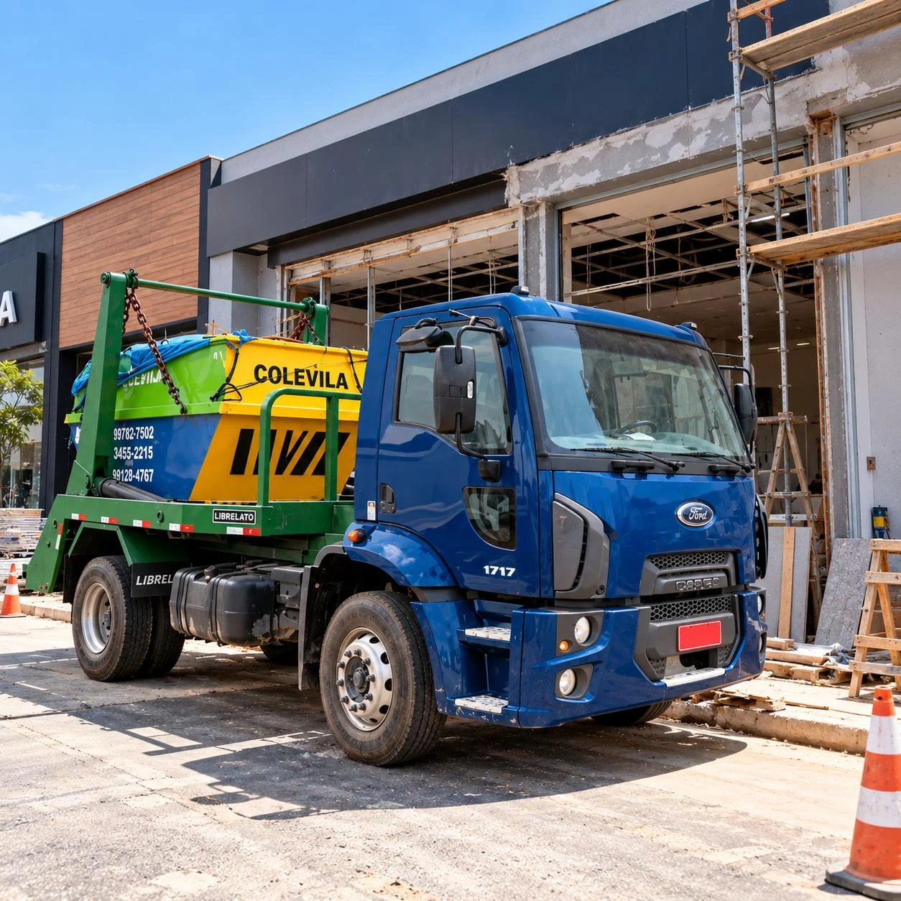
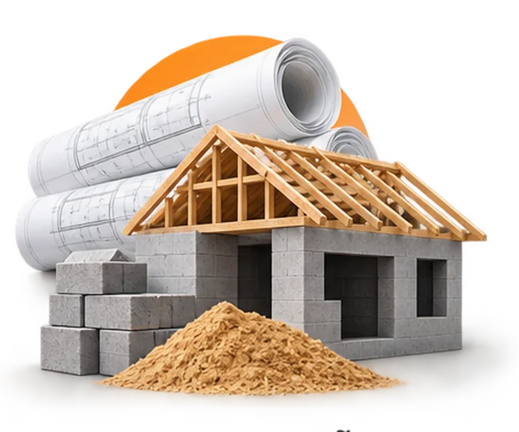
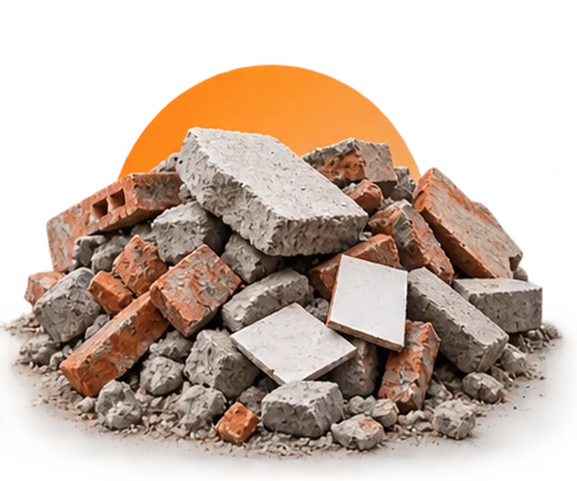
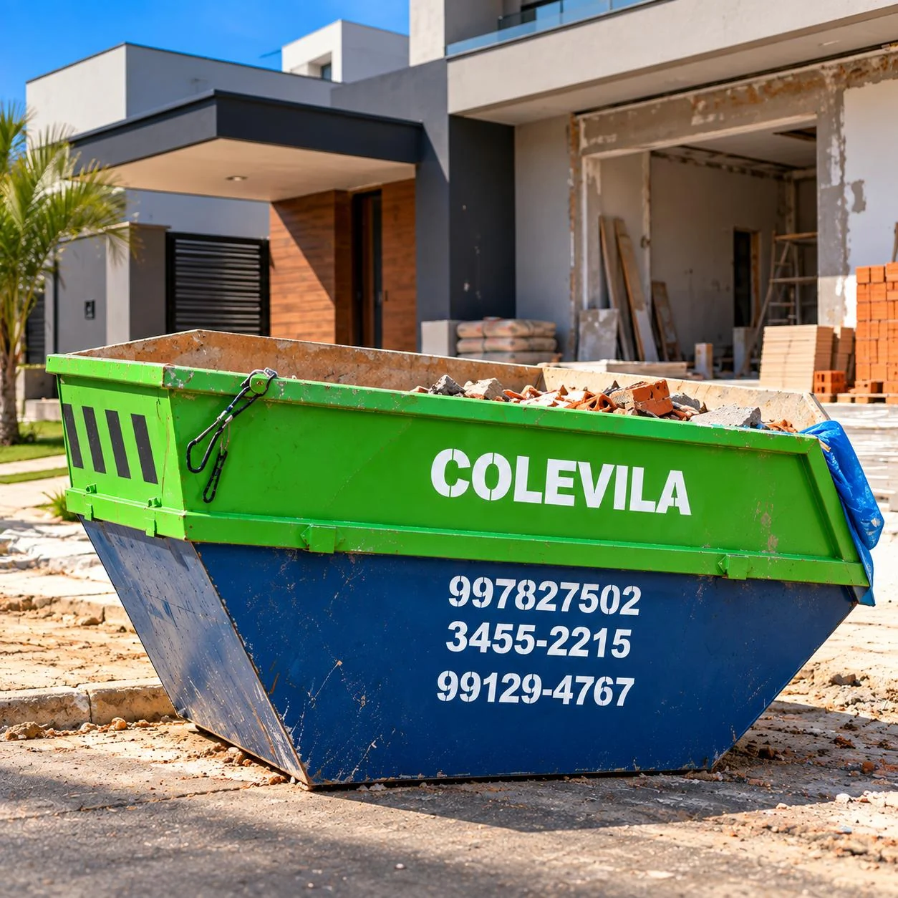
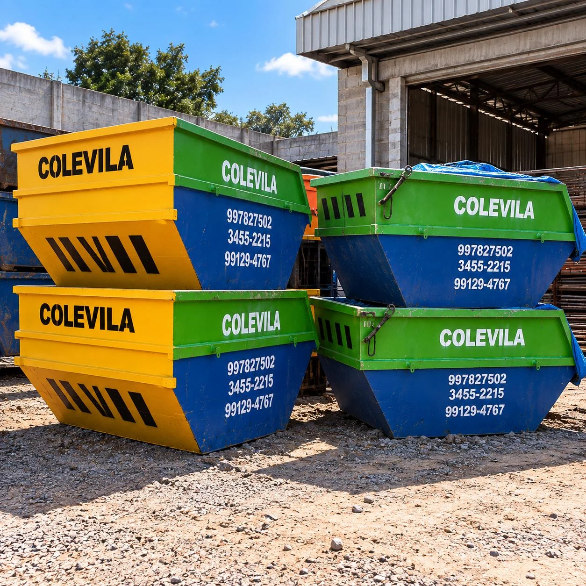
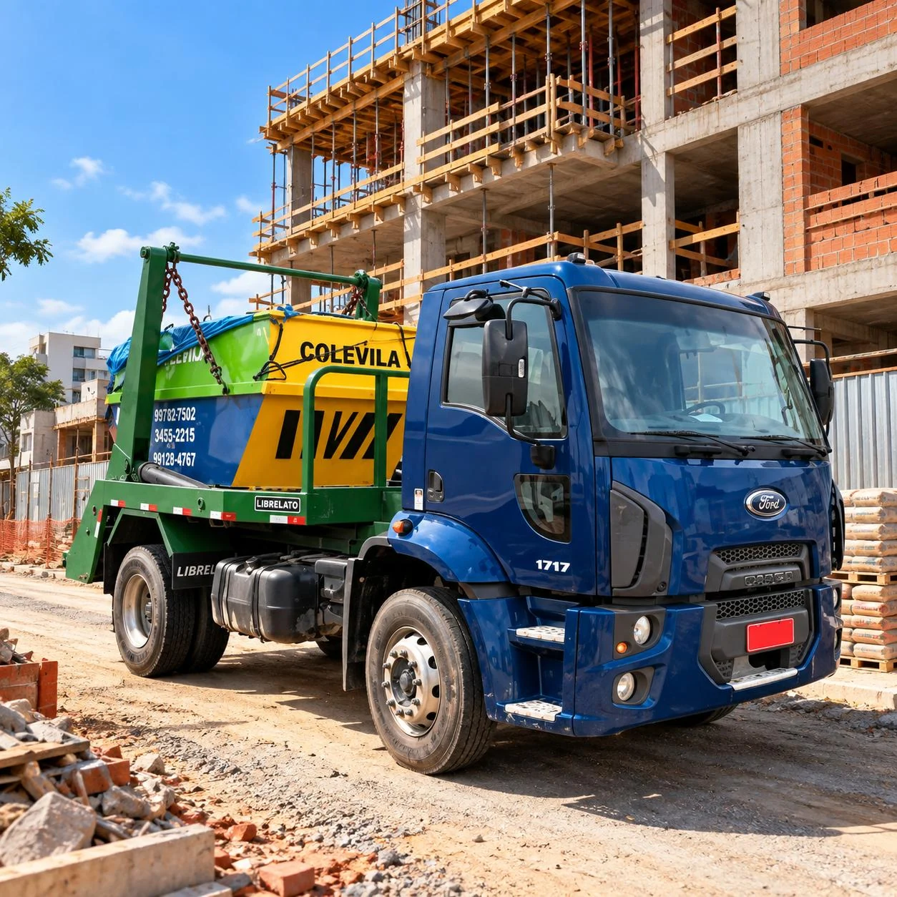
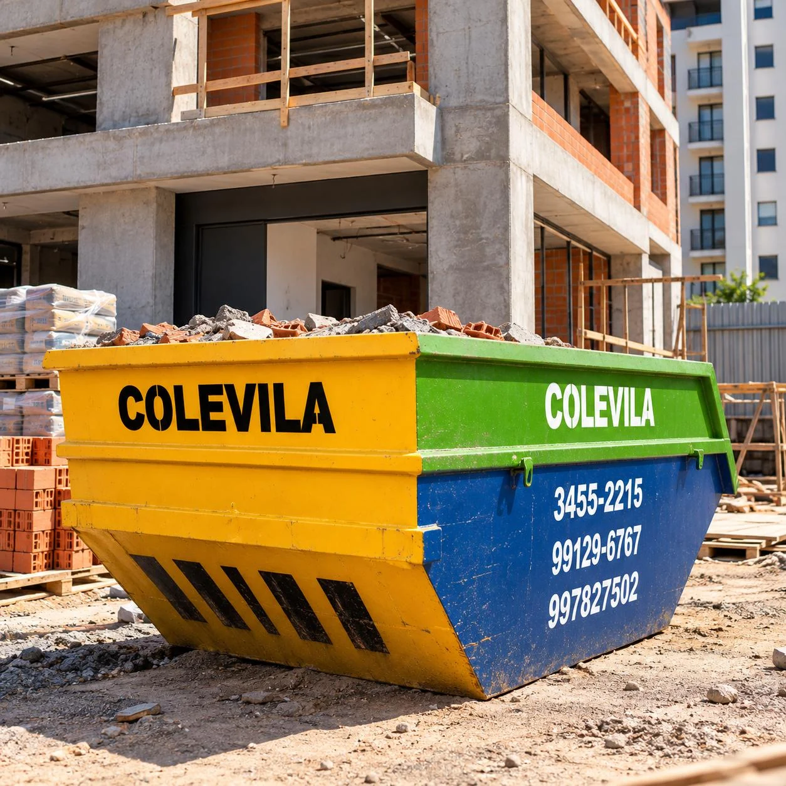
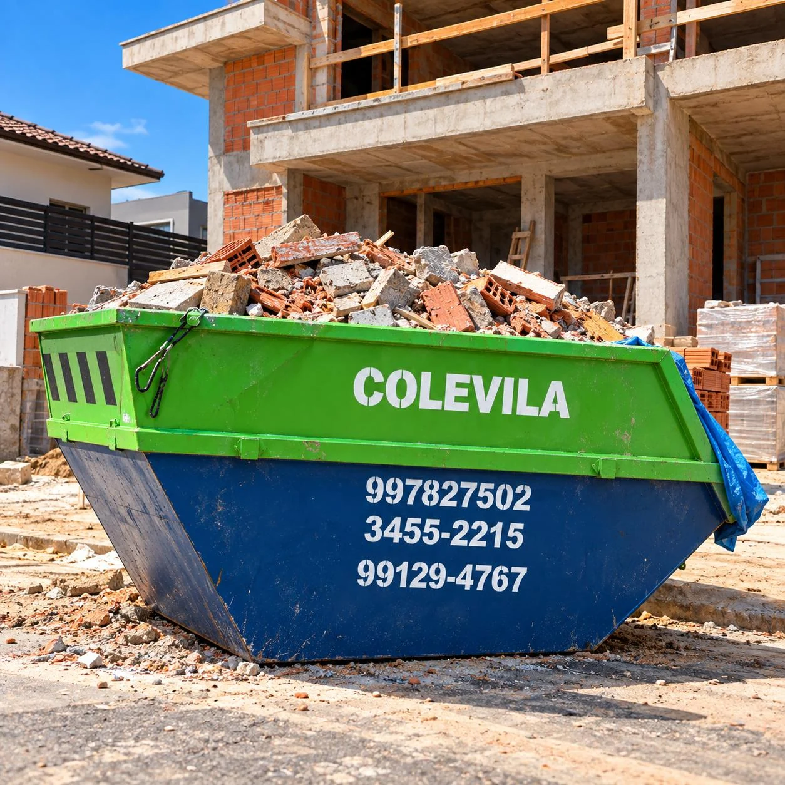

Conte o que precisa
Envie seu bairro, endereço, tipo de resíduo e a data desejada pelo WhatsApp.

COLEVILA CAÇAMBA · JOINVILLE
Há 30 anos, a Colevila ajuda a abrir espaço para sua obra. Aluguel de caçamba de entulho em Joinville, com entrega e retirada combinadas com você.
Consulte disponibilidade, prazo e condições para seu endereço.
CONFIANÇA CONSTRUÍDA
MENOS ENTULHO. MAIS ESPAÇO.
Construir, reformar ou renovar um espaço exige planejamento. A caçamba ajuda a concentrar os resíduos e manter a rotina da obra mais organizada.
Precisa de locação de caçamba em Joinville? Consulte a opção adequada ao seu serviço, combine a entrega e planeje a retirada com a Colevila Caçamba.
Vamos conversar sobre sua obra ↗UMA SOLUÇÃO PARA CADA ETAPA
Em casa, no comércio ou na construção.
Encontre o apoio para o seu próximo projeto.
Organização para o dia a dia do seu canteiro.
02 /Mais espaço para renovar sua casa ou comércio.
03 /
Apoio para os resíduos de cada etapa da construção.
04 /Planeje o recolhimento do entulho da sua demolição.
05 /Consulte os materiais aceitos antes de contratar.
06 /
Uma solução prática para liberar o espaço da obra.
Não sabe qual opção é a ideal? Conte o que você precisa.
Falar com o atendimento ↗
DO PROJETO À RENOVAÇÃO.PRATICIDADE QUE FAZ DIFERENÇA
Uma caçamba no lugar certo facilita a organização dos resíduos e libera espaço para o trabalho continuar.
DO PRIMEIRO CONTATO À RETIRADA
Envie seu bairro, endereço, tipo de resíduo e a data desejada pelo WhatsApp.
Consulte disponibilidade, valor, prazo de locação e local para posicionar a caçamba.
Receba a caçamba conforme combinado e alinhe a retirada com o atendimento.
PERTO DE VOCÊ. PERTO DA SUA OBRA.
Contato direto para resolver
o que sua obra precisa.
Foco em Joinville, com consulta de atendimento para o seu endereço.
Converse diretamente para esclarecer dúvidas e pedir seu orçamento.
Combine os detalhes da locação e planeje as próximas etapas da obra.
Envie as informações do serviço pelo aplicativo, de onde estiver.
DA PEQUENA REFORMA À GRANDE OBRA



AQUI É JOINVILLE
Aluguel de caçamba em Joinville — SC. Informe seu bairro, o tipo de entulho e a data desejada para consultar disponibilidade e condições de entrega.

QUEM CONTRATOU, CONTA
Veja o que os clientes dizem
sobre a Colevila Caçamba.
“Ótimo atendimento!! Motorista muito prestativo!! Preço bom comparado ao mercado”
“Serviço de qualidade!”
“Bom preço e serviço.”
ANTES DE CONTRATAR
Fale com nosso atendimento para conhecer as condições da sua locação.
Tirar uma dúvida no WhatsApp ↗Chame no WhatsApp (47) 99782-7502 e informe o endereço, o tipo de serviço e a data desejada. O atendimento confirma disponibilidade e condições.
Solicite um orçamento para sua necessidade. Informe o bairro, o tipo de resíduo e o período pretendido para consultar o valor.
Informe os materiais que pretende descartar antes de contratar. A equipe confirmará quais são aceitos e as orientações para uso da caçamba.
O prazo de locação e a retirada são combinados no atendimento. Confirme o período ao solicitar seu orçamento.
Atendemos em Joinville. Envie seu endereço para verificar disponibilidade e as condições de acesso e posicionamento.
PRONTO PARA O PRÓXIMO PASSO?
Peça seu orçamento e combine a locação da sua caçamba.